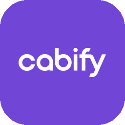

I'm an Industrial Engineer who found my sweet spot where operations meet AI. At Cabify (ride-hailing, 40+ cities) I went from Customer Operations trainee to OEx Automation Analyst in ten months by doing one thing consistently: finding painful manual processes and shipping automations that make them disappear.
My toolkit is deliberately pragmatic — n8n for orchestration, Claude for reasoning, Claude Code for the things that need real software, locally-trained ML where LLMs are overkill, and enough Python/JavaScript to glue it together. Everything listed here runs in production with real users, real money and real deadlines — not tutorials.
I also teach: selected by Talent Development, I run Cabify Academy's internal n8n workshops.
Current roleOEx Automation Analyst @ Cabify
EducationBSc Industrial Organization Engineering (URJC, Oct 2026)
Beyond workNational-level triathlete · DJ · Entrepreneurship · Active Investor
Next stopBerlin, October 2026

Featured at Cabify's Global All Hands — September 2026
My work was presented to the whole company in the ESP + HQ block: AQM / DQM and booking a Cabify straight from WhatsApp. AQM is built and shipped — it now runs the operation and Product has taken it on as a native initiative. DQM is the one that sits inside the company's headline priorities for the second half of 2026.
AQM · asset quality — shipped
DQM · driver quality — H2 priority
WhatsApp · booking without the app